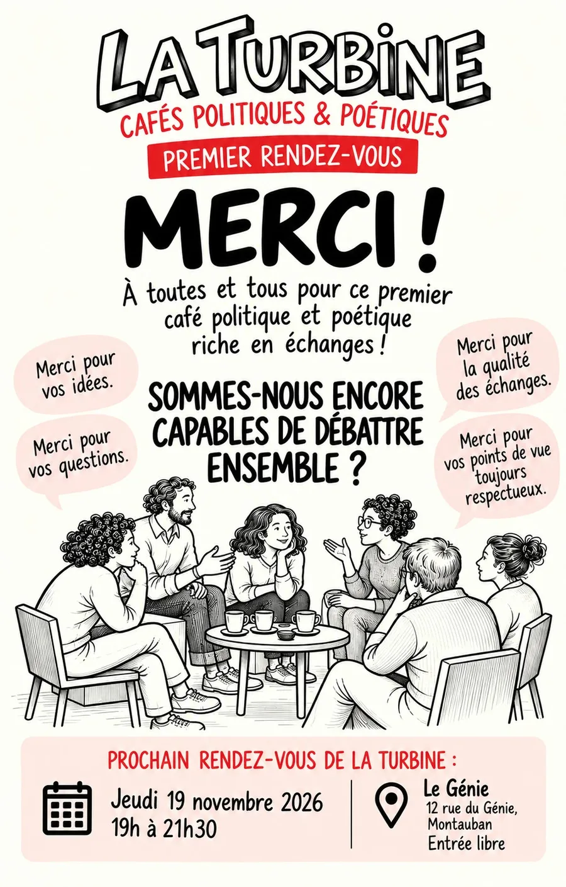

Jeudi 8 octobre 2026 · Premier rendez-vous
Sommes-nous encore capables de débattre ensemble ?
Premier café de La Turbine, avec le délégué départemental du Défenseur des droits. Une soirée pour se rencontrer, écouter, questionner, confronter : un argument en rencontre un autre, une expérience en rencontre une autre.
Merci à toutes et tous pour ce premier café politique et poétique, riche en échanges.